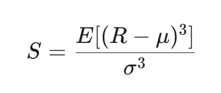
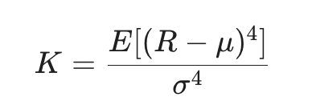

Research note · Return Distributions
Skewness, Kurtosis, and Financial Returns
When quantitative analysts evaluate these metrics, they apply them to the returns(the percentage or logarithmic changes) of a price or NAV series, not the raw prices themselves. In traditional finance, asset returns are often assumed to follow a Gaussian distribution. In this case, skewness =0, which means the curve is perfectly symmetrical. Skewness measure the lopsidedness or asymmetry of the return distribution. Mathematically, it is the third standardized moment:

In real life financial time series, return are rarely perfectly symmetrical. They lean heavily in one direction. Most broad equity indices (like the S&P 500) and long-only equity mutual fund NAVs exhibit negative skew. This means the distribution is tilted to the right, with a long, fat tail stretching to the left(the loss side). In this case, it means market take the stairs up and elevator down. We will typically see a large number of small, consistent daily gains, punctuated by a few massive, violent daily losses. Some assets exhibit positive skew, meaning the long tail stretches to the right. This could be the profile of a lottery ticket or venture capital portfolio. You experience frequent small losses (or flat days), but occasionally you get a massive, exponential gain. Safe-haven assets (like VIX futures or out-of-the-money put options) also show positive skew because they explode in value during market panics.
Kurtosis measures the "tailedness" of the distribution, specifically, how much of the variance is driven by extreme, rare events rather than everyday fluctuations. Gaussian Kurtosis = 3.It is the fourth standardized moment. To simplify things, people often look at Excess Kurtosis (K - 3), where anything above 0 indicates fatter tails than a normal distribution.

Almost all high-frequency financial time series (daily, hourly, or tick data) exhibit Excess Kurtosis > 0, making them leptokurtic. A leptokurtic distribution has a taller, narrower peak and much fatter tails than Gaussian curve. This means more boring days( Most days, the prices barely moves, the returns cluster tightly around the average more than a normal distribution expected. Meanwhile, it means more catastrophic/explosive days. When the price does move, it moves drastically. Extreme outlier events (Black Swans, 2008 Lehman collapse, 2020 COVID crash) happen far more frequently than the Gaussian model predicts.